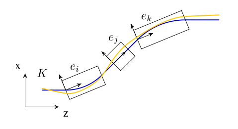
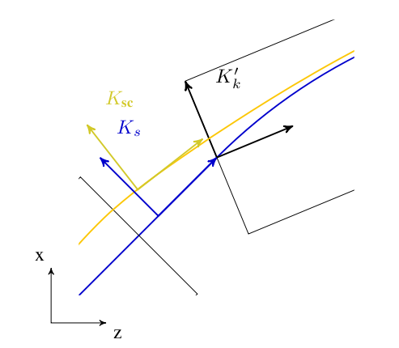

1 Overview
1.1 Introduction
OPALX is a fully three-dimensional program to track in time, relativistic particles taking into account space charge forces, self-consistently in the electrostatic approximation, and short-range longitudinal and transverse wake fields. OPALX is one of the few codes that is implemented using a parallel programming paradigm from the ground up. This makes OPALX indispensable for high statistics simulations of various kinds of existing and new accelerators. It has a comprehensive set of beamline elements, and furthermore allows arbitrary overlap of their fields, which gives OPALX a capability to model both the standing wave structure and traveling wave structure. Beside IMPACT-T it is the only code making use of space charge solvers based on an integrated Green (Qiang et al. 2005), (Qiang et al. 2006), (Qiang et al. 2007) function to efficiently and accurately treat beams with large aspect ratio, and a shifted Green function to efficiently treat image charge effects of a cathode (Fubiani et al. 2006), (Qiang et al. 2005), (Qiang et al. 2006),(Qiang et al. 2007). For simulations of particles sources i.e. electron guns OPALX uses the technique of energy binning in the electrostatic space charge calculation to model beams with large energy spread. In the very near future a parallel Multigrid solver taking into account the exact geometry will be implemented.
1.2 Variables in OPALX
OPALX uses the following canonical variables to describe the motion of particles. The physical units are listed in square brackets.
- X
-
Horizontal position \(x\) of a particle relative to the axis of the element [m].
- PX
-
\(\beta_x\gamma\) Horizontal canonical momentum Units.
- Y
-
Vertical position \(y\) of a particle relative to the axis of the element [m].
- PY
-
\(\beta_y\gamma\) Vertical canonical momentum Units.
- Z
-
Longitudinal position \(z\) of a particle in floor co-ordinates [m].
- PZ
-
\(\beta_z\gamma\) Longitudinal canonical momentum Units.
The independent variable is t [s].
1.3 Integration of the Equation of Motion
OPALX integrates the relativistic Lorentz equation
\[\frac{\mathrm{d}\gamma\mathbf{v}}{\mathrm{d}t} = \frac{q}{m}[\mathbf{E}_{ext} + \mathbf{E}_{sc} + \mathbf{v} \times (\mathbf{B}_{ext} + \mathbf{B}_{sc})]\]
where \(\gamma\) is the relativistic factor, \(q\) is the charge, and \(m\) is the rest mass of the particle. \(\mathbf{E}\) and \(\mathbf{B}\) are abbreviations for the electric field \(\mathbf{E}(\mathbf{x},t)\) and magnetic field \(\mathbf{B}(\mathbf{x},t)\). To update the positions and momenta OPALX uses the Boris-Buneman algorithm (Birdsall and Langdon 1985).
1.4 Positioning of Elements
Since OPAL version 2.0 of OPAL elements can be placed in space using 3D coordinates X, Y, Z, THETA, PHI and PSI, see Common Attributes for all Elements. The old notation using ELEMEDGE is still supported. OPALX then computes the position in 3D using ELEMDGE, ANGLE and DESIGNENERGY. It assumes that the trajectory consists of straight lines and segments of circles. Fringe fields are ignored. For cases where these simplifications aren’t justifiable the user should use 3D positioning. For a simple switchover OPAL writes a file _3D.opal where all elements are placed in 3D.
Beamlines containing guns should be supplemented with the element SOURCE. This allows OPAL to distinguish the cases and adjust the initial energy of the reference particle.
Prior to OPAL version 2.0 elements needed only a defined length. The transverse extent was not defined for elements except when combined with 2D or 3D field maps. An aperture had to be designed to give elements a limited extent in transverse direction since elements now can be placed freely in three-dimensional space. See Common Attributes for all Elements for how to define an aperture.
1.5 Coordinate Systems
The motion of a charged particle in an accelerator can be described by relativistic Hamilton mechanics. A particular motion is that of the reference particle, having the central energy and traveling on the so-called reference trajectory. Motion of a particle close to this fictitious reference particle can be described by linearized equations for the displacement of the particle under study, relative to the reference particle. In OPALX, the time \(t\) is used as independent variable instead of the path length \(s\). The relation between them can be expressed as
\[\frac{\mathrm{d}}{\mathrm{d} t} = \frac{\mathrm{d}}{\mathrm{d}\mathbf{s}}\frac{\mathrm{d}\mathbf{s}}{\mathrm{d} t} = \mathbf{\beta}c\frac{\mathrm{d}}{\mathrm{d}\mathbf{s}}.\]
Global Cartesian Coordinate System
We define the global cartesian coordinate system, also known as floor coordinate system with \(K\), a point in this coordinate system is denoted by \((X, Y, Z) \in K\). In Figure 1.1 the geometry of the accelerator is uniquely defined by the sequence of physical elements in \(K\). The beam elements are numbered \(e_0, \ldots , e_i, \ldots e_n\).

Local Cartesian Coordinate System
A local coordinate system \(K'_i\) is attached to each element \(e_i\). This is simply a frame in which \((0,0,0)\) is at the entrance of each element. For an illustration see Figure 1.1. The local reference system \((x, y, z) \in K'_n\) may thus be referred to a global Cartesian coordinate system \((X, Y, Z) \in K\).
The local coordinates \((x_i, y_i, z_i)\) at element \(e_i\) with respect to the global coordinates \((X, Y, Z)\) are defined by three displacements \((X_i, Y_i, Z_i)\) and three angles \((\Theta_i, \Phi_i, \Psi_i)\).
\(\Psi\) is the roll angle about the global \(Z\)-axis. \(\Phi\) is the yaw angle about the global \(Y\)-axis. Lastly, \(\Theta\) is the pitch angle about the global \(X\)-axis. All three angles form right-handed screws with their corresponding axes. The angles (\(\Theta,\Phi,\Psi\)) are the Tait-Bryan angles (Tait-Bryan Angles, n.d.).
The displacement is described by a vector \(\mathbf{v}\) and the orientation by a unitary matrix \(\mathcal{W}\). The column vectors of \(\mathcal{W}\) are unit vectors spanning the local coordinate axes in the order \((x, y, z)\). \(\mathbf{v}\) and \(\mathcal{W}\) have the values:
\[\mathbf{v} =\left(\begin{array}{c} X \\ Y \\ Z \end{array}\right), \qquad \mathcal{W}=\mathcal{S}\mathcal{T}\mathcal{U}\]
where
\[\mathcal{S}=\left(\begin{array}{ccc} \cos\Theta & 0 & \sin\Theta \\ 0 & 1 & 0 \\ -\sin\Theta & 0 & \cos\Theta \end{array}\right), \quad \mathcal{T}=\left(\begin{array}{ccc} 1 & 0 & 0 \\ 0 & \cos\Phi & \sin\Phi \\ 0 & -\sin\Phi & \cos\Phi \end{array}\right), \quad \mathcal{U}=\left(\begin{array}{ccc} \cos\Psi & -\sin\Psi & 0 \\ \sin\Psi & \cos\Psi & 0 \\ 0 & 0 & 1 \end{array}\right).\]
We take the vector \(\mathbf{r}_i\) to be the displacement and the matrix \(\mathcal{S}_i\) to be the rotation of the local reference system at the exit of the element \(i\) with respect to the entrance of that element.
Denoting with \(i\) a beam line element, one can compute \(\mathbf{v}_i\) and \(\mathcal{W}_i\) by the recurrence relations
\[\mathbf{v}_i = \mathcal{W}_{i-1}\mathbf{r}_i + \mathbf{v}_{i-1}, \qquad \mathcal{W}_i = \mathcal{W}_{i-1}\mathcal{S}_i,\]
where \(\mathbf{v}_0\) corresponds to the origin of the LINE and \(\mathcal{W}_0\) to its orientation. In OPALX they can be defined using either X, Y, Z, THETA, PHI and PSI or ORIGIN and ORIENTATION, see Simple Beam Lines.
Space Charge Coordinate System
In order to calculate space charge in the electrostatic approximation, we introduce a co-moving coordinate system \(K_{\text{sc}}\), in which the origin coincides with the mean position of the particles and the mean momentum is parallel to the z-axis.
Curvilinear Coordinate System
In order to compute statistics of the particle ensemble, \(K_s\) is introduced. The accompanying tripod (Dreibein) of the reference orbit spans a local curvilinear right handed system \((x,y,s)\). The local \(s\)-axis is the tangent to the reference orbit. The two other axes are perpendicular to the reference orbit and are labelled \(x\) (in the bend plane) and \(y\) (perpendicular to the bend plane).

Both coordinate systems are described in Figure 1.2.
Design or Reference Orbit
The reference orbit consists of a series of straight sections and circular arcs and is computed by the Orbit Threader i.e. deduced from the element placement in the floor coordinate system.
Compatibility Mode
To facilitate the change for users we will provide a compatibility mode. The idea is that the user does not have to change the input file. Instead OPALX will compute the positions of the elements. For this it uses the bend angle and chord length of the dipoles and the position of the elements along the trajectory. The user can choose whether effects due to fringe fields are considered when computing the path length of dipoles or not. The option to toggle OPALX’s behavior is called IDEALIZED. OPALX assumes per default that provided ELEMEDGE for elements downstream of a dipole are computed without any effects due to fringe fields.
Elements that overlap with the fields of a dipole have to be handled separately by the user to position them in 3D.
We split the positioning of the elements into two steps. In a first step we compute the positions of the dipoles. Here we assume that their fields don’t overlap. In a second step we can then compute the positions and orientations of all other elements.
The accuracy of this method is good for all elements except for those that overlap with the field of a dipole.
Orbit Threader and Autophasing
The OrbitThreader integrates a design particle through the lattice and setups up a multi map structure (IndexMap). Furthermore when the reference particle hits an rf-structure for the first time then it auto-phases the rf-structure, see Appendix Auto-phasing Algorithm. The multi map structure speeds up the search for elements that influence the particles at a given position in 3D space by minimizing the looping over elements when integrating an ensemble of particles. For each time step, IndexMap returns a set of elements \(\mathcal{S}_{\text{e}} \subset {e_0 \ldots e_n}\) in case of the example given in Figure 1.1. An implicit drift is modelled as an empty set \(\emptyset\). The IndexMap therefore represents an occupancy model on the reference coordinate: each interval stores the set of elements whose field-support extents are active on that interval. This is distinct from the geometric placement of the corresponding element bodies. In overlapping regions the design particle sees the superposition of all active fields, and the reference path is determined by integrating this combined field.
1.6 Flow Diagram of OPALX

A regular time step in OPALX is sketched in Figure 1.3. In order to compute the coordinate system transformation from the reference coordinate system \(K_s\) to the local coordinate systems \(K'_n\) we join the transformation from floor coordinate system \(K\) to \(K'_n\) to the transformation from \(K_s\) to \(K\). All computations of rotations which are involved in the computation of coordinate system transformations are performed using quaternions. The resulting quaternions are then converted to the appropriate matrix representation before applying the rotation operation onto the particle positions and momenta.
As can be seen from Figure 1.3 the integration of the trajectories of the particles are integrated and the computation of the statistics of the six-dimensional phase space are performed in the reference coordinate system.
1.7 Multipoles in different Coordinate systems
In the following sections there are three models presented for the fringe field of a multipole. The first one deals with a straight multipole, while the second one treats a curved multipole, both starting with a power expansion for the magnetic field. The last model tries to be different by starting with a more compact functional form of the field which is then adapted to straight and curved geometries.
Fringe field models
(for a straight multipole)
Most accelerator modeling codes use the hard-edge model for magnets - constant Hamiltonian. Real magnets always have a smooth transition at the edges - fringe fields. To obtain a multipole description of a field we can apply the theory of analytic functions.
\[\begin{aligned} \nabla \cdot \mathbf{B} & = 0 \Rightarrow \exists \quad \mathbf{A} \quad \text{with} \quad \mathbf{B} = \nabla \times \mathbf{A} \\ \nabla \times \mathbf{B} & = 0 \Rightarrow \exists \quad V \quad \text{with} \quad \mathbf{B} = - \nabla V \end{aligned}\]
Assuming that \(A\) has only a non-zero component \(A_s\) we get
\[\begin{aligned} B_x & = - \frac{\partial V}{\partial x} = \frac{\partial A_s}{\partial y} \\ \\ B_y & = - \frac{\partial V}{\partial y} = - \frac{\partial A_s}{\partial x} \end{aligned}\]
These equations are just the Cauchy-Riemann conditions for an analytic function \(\tilde{A} (z) = A_s (x, y) + i V(x,y)\). So the complex potential is an analytic function and can be expanded as a power series
\[\tilde{A} (z) = \sum_{n=0}^{\infty} \kappa_n z^n, \quad \kappa_n = \lambda_n + i \mu_n\]
with \(\lambda_n, \mu_n\) being real constants. It is practical to express the field in cylindrical coordinates \((r, \varphi, s)\)
\[\begin{aligned} x & = r \cos \varphi \quad y = r \sin \varphi \\ z^n & = r^n ( \cos n \varphi + i \sin n \varphi ) \end{aligned}\]
From the real and imaginary parts of equation () we obtain
\[\begin{aligned} V(r, \varphi) & = \sum_{n=0}^{\infty} r^n ( \mu_n \cos n \varphi + \lambda_n \sin n \varphi ) \\ A_s (r, \varphi) & = \sum_{n=0}^{\infty} r^n ( \lambda_n \cos n \varphi - \mu_n \sin n \varphi ) \end{aligned}\]
Taking the gradient of \(-V(r, \varphi)\) we obtain the multipole expansion of the azimuthal and radial field components, respectively
\[\begin{aligned} B_{\varphi} & = - \frac{1}{r} \frac{\partial V}{\partial \varphi} = - \sum_{n=0}^{\infty} n r^{n-1} ( \lambda_n \cos n \varphi - \mu_n \sin n \varphi ) \\ B_r & = - \frac{\partial V}{\partial r} = - \sum_{n=0}^{\infty} n r^{n-1} ( \mu_n \cos n \varphi + \lambda_n \sin n \varphi ) \end{aligned}\]
Furthermore, we introduce the normal multipole coefficient \(b_n\) and skew coefficient \(a_n\) defined with the reference radius \(r_0\) and the magnitude of the field at this radius \(B_0\) (these coefficients can be a function of s in a more general case as it is presented further on).
\[b_n = - \frac{n \lambda_n}{B_0} r_0^{n-1} \qquad a_n = \frac{n \mu_n}{B_0} r_0^{n-1}\]
\[\begin{aligned} B_{\varphi}(r, \varphi) & = B_0 \sum_{n=1}^{\infty} ( b_n \cos n \varphi+ a_n \sin n \varphi ) \left( \frac{r}{r_0} \right) ^{n-1} \\ B_r (r, \varphi) & = B_0 \sum_{n=1}^{\infty} ( -a_n \cos n \varphi+ b_n \sin n \varphi ) \left( \frac{r}{r_0} \right) ^{n-1} \end{aligned}\]
To obtain a model for the fringe field of a straight multipole, a proposed starting solution for a non-skew magnetic field is
\[\begin{aligned} V & = \sum_{n=1}^{\infty} V_n (r,z) \sin n \varphi \\ V_n & = \sum_{k=0}^{\infty} C_{n,k}(z) r^{n+2k} \end{aligned}\]
It is straightforward to derive a relation between coefficients
\[\nabla ^2 V = 0 \Rightarrow \frac{1}{r} \frac{\partial}{\partial r} \left( r \frac{\partial V_n}{\partial r} \right) + \frac{\partial^2 V_n}{\partial z^2} = \frac{n^2 V_n}{r^2} = 0\]
\[V_n = \sum_{k=0}^{\infty} C_{n,k}(z) r^{n+2k}\]
\[\Rightarrow \sum_{k=0}^{\infty} \left[ r^{n+2(k-1)} \left[ (n+2k)^2 - n^2 \right] C_{n,k}(z) + r^{n+2k} \frac{\partial^2 C_{n,k}(z)}{\partial z^2} \right] = 0\]
By identifying the term in front of the same powers of \(r\) we obtain the recurrence relation
\[C_{n,k}(z) = - \frac{1}{4k(n+k)} \frac{d^2 C_{n,k-1}} {dz^2}, k = 1,2, \ldots\]
The solution of the recursion relation becomes
\[C_{n,k} (z) = (-1)^k \frac{n!}{2^{2k} k! (n+k)!} \frac{d^{2k} C_{n,0}(z)}{dz^{2k}}\]
Therefore
\[V_n = - \left( \sum_{k=0}^{\infty} (-1)^{k+1} \frac{n!}{2^{2k} k! (n+k)!} C_{n, 0}^{(2k)}(z) r^{2k} \right) r^n\]
The transverse components of the field are
\[\begin{aligned} B_r & = \sum_{n=1}^{\infty} g_{rn} r^{n-1} \sin n \varphi \\ B_{\varphi} & = \sum_{n=1}^{\infty} g_{\varphi n} r^{n-1} \cos n \varphi \end{aligned}\]
where the following gradients determine the entire potential and can be deduced from the function \(C_{n,0}(z)\) once the harmonic \(n\) is fixed.
\[\begin{aligned} g_{rn} (r,z) & = \sum_{k=0}^{\infty} (-1)^{k+1} \frac{n! (n+2k)}{2^{2k} k! (n+k)!} C_{n,0}^{(2k)}(z)r^{2k} \\ g_{ \varphi n} (r,z) & = \sum_{k=0}^{\infty} (-1)^{k+1} \frac{n!n}{2^{2k} k! (n+k)!} C_{n,0}^{(2k)}(z)r^{2k} \end{aligned}\]
The z-directed component of the filed can be expressed in a similar form
\[\begin{aligned} B_z & = - \frac{\partial V}{\partial z} = \sum_{n=1}^{\infty} g_{zn} r^n \sin n \varphi \\ g_{zn} & = \sum_{k=0}^{\infty} (-1)^{k+1} \frac{n!}{2^{2k} k! (n+k)!} C_{n,0}^{2k+1} r^{2k} \end{aligned}\]
The gradient functions \(g_{rn}, g_{\varphi n}, g_{zn}\) are obtained from
\[\begin{aligned} B_{r,n} & = - \frac{\partial V_n}{\partial r} \sin n \varphi = g_{rn} r^{n-1} \sin n \varphi \\ B_{\varphi,n} & = - \frac{n}{r} V_n \cos n \varphi = g_{\varphi n} r^{n-1} \cos n \varphi \\ B_{z,n} & = - \frac{\partial V_n}{\partial z} \sin n \varphi = g_{zn} r^{n} \sin n \varphi \end{aligned}\]
One preferred model to approximate the gradient profile on the central axis is the k-parameter Enge function
\[\begin{aligned} C_{n,0}(z) & = \frac{G_0}{1+exp[P(d(z))]}, \quad G_0 = \frac{B_0}{r_0^{n-1}} \\ P(d) & = C_0 + C_1 \left( \frac{d}{\lambda} \right) + C_2 \left( \frac{d}{\lambda} \right)^2 + \ldots + C_{k-1} \left( \frac{d}{\lambda} \right)^{k-1} \end{aligned}\]
where \(d(z)\) is the distance to the field boundary and \(\lambda\) characterizes the fringe field length.
Fringe field of a curved multipole
(fixed radius)
We consider the Frenet-Serret coordinate system $ ( , , )$ with the radius of curvature $ $ constant and the scale factor $ h_s = 1 + x/ $. A conversion to these coordinates implies that
\[\begin{aligned} \nabla \cdot \mathbf{B} & = \frac{1}{h_s} \left[ \frac{\partial (h_s B_x )}{\partial x} + \frac{\partial B_s}{\partial s} + \frac{\partial (h_s B_z )}{\partial z} \right] \\ \\ \nabla \times \mathbf{B} & = \frac{1}{h_s} \left[ \frac{\partial B_z}{\partial s} - \frac{\partial (h_s B_s )}{\partial z} \right] \hat{\mathbf{x}} + \left[ \frac{\partial B_x}{\partial z} - \frac{\partial B_z}{\partial x} \right] \hat{\mathbf{s}} + \frac{1}{h_s} \left[ \frac{\partial (h_s B_s)}{\partial x} - \frac{\partial B_x}{\partial s} \right] \hat{\mathbf{z}} \end{aligned}\]
To simplify the problem, consider multipoles with mid-plane symmetry, i.e.
\[b_z (z) = B_z (-z) \qquad B_x (z) = - B_x (-z) \qquad B_s (z) = - B_s (-z)\]
The most general form of the expansion is
\[\begin{aligned} B_z & = \sum_{i,k=0}^{\infty} b_{i,k} x^i z^{2k} \\ B_x & = z \sum_{i,k=0}^{\infty} a_{i,k} x^i z^{2k} \\ B_s & = z \sum_{i,k=0}^{\infty} c_{i,k} x^i z^{2k} \end{aligned}\]
Maxwell’s equations $ = 0 $ and $ = 0 $ in the above coordinates yield
\[\frac{\partial}{\partial x} \left( (1+x/ \rho) B_x \right) + \frac{\partial B_s}{\partial s} + (1+x/ \rho) \frac{\partial B_z}{\partial z} = 0\]
\[\begin{aligned} \frac{\partial B_z}{\partial s} & = (1+x/ \rho) \frac{\partial B_s}{\partial z} \\ \\ \frac{\partial B_x}{\partial z} & = \frac{\partial B_z}{\partial s} \\ \\ \frac{\partial B_x}{\partial s} & = \frac{\partial}{\partial x} \left( (1+x/ \rho) B_s \right) \end{aligned}\]
The substitution of the general-form equation into Maxwell’s equations allows for the derivation of recursion relations. Maxwell’s equations gives
\[\sum_{i,k=0}^{\infty} a_{i,k} (2k+1) x^i z^{2k} = \sum_{i,k=0}^{\infty} b_{i,k} i x^{i-1} z^{2k}\]
Equating the powers in \(x^i z^{2k}\)
\[a_{i,k} = \frac{i+1}{2k+1} b_{i+1,k}\]
A similar result is obtained from Maxwell’s equations
\[\begin{aligned} \sum_{i,k=0}^{\infty} \partial_s b_{i,k} x^i z^{2k} & = \left( 1+ \frac{x}{\rho} \right) \sum_{i,k=0}^{\infty} c_{i,k} (2k+1) x^i z^{2k} \\ \Rightarrow c_{i,k} & + \frac{1}{\rho} c_{i-1,k} = \frac{1}{2k+1} \partial_s b_{i,k} \end{aligned}\]
The last equation from \(\nabla \times \mathbf{B} = 0\) should be consistent with the two recursion relations obtained. Maxwell’s equations implies
\[\sum_{i,k=0}^{\infty} \left[ \frac{i+1}{\rho} c_{i,k} x^i + c_{i,k} i x^{i-1} \right] z^{k+1} = \sum_{i,k=0}^{\infty} \partial_s a_{i,k} x^i z^{2k}\]
\[\Rightarrow \frac{\partial_s a_{i,k}}{i+1} = \frac{1}{\rho} c_{i,k} + c_{i+1,k}\]
This results follows directly from the a-factor relation and the c-factor relation; therefore the relations are consistent. Furthermore, the last required relations is obtained from the divergence of B
\[\sum_{i,k=0}^{\infty} \left[ \frac{a_{i,k} x^i z^{2k+1}}{\rho} + i a_{i,k} x^{i-1} z^{2k+1} + \frac{i a_{i,k} x^i z^{2k+1}}{\rho} + \partial_s c_{i,k} x^i z^{2k+1} + 2kb_{i,k}x^i z^{2k-1} \right] = 0\]
\[\Rightarrow \partial_s c_{i,k} + \frac{2(k+1)}{\rho} b_{i-1,k+1} + 2(k+1) b_{i,k+1} + \frac{1}{\rho} a_{i,k} + (i+1) a_{i+1,k} + \frac{1}{\rho} a_{i,k} = 0\]
Using the relation (the a-factor relation) to replace the \(a\) coefficients with \(b\)’s we arrive at
\[\partial_s c_{i,k} + \frac{(i+1)^2}{\rho (2k+1)} b_{i+1,k} + \frac{(i+1)(i+2)}{2k+1} b_{i+2,k} + \frac{2(k+1)}{\rho} b_{i-1,k+1} + 2(k+1) b_{i,k+1} = 0\]
All the coefficients above can be determined recursively provided the field \(B_z\) can be measured at the mid-plane in the form
\[B_z(z=0) = B_{0,0} + B_{1,0}x + B_{2,0} x^2 + B_{3,0} x^3 + \ldots\]
where \(B_{i,0}\) are functions of \(s\) and they can model the fringe field for each multipole term \(x^n\). As an example, for a dipole magnet, the \(B_{1,0}\) function can be model as an Enge function or \(tanh\).
Fringe field of a curved multipole
(variable radius of curvature)
The difference between this case and the above is that \(\rho\) is now a function of \(s\), \(\rho(s)\). We can obtain the same result starting with the same functional forms for the field (the general-form equation). The result of the previous section also holds in this case since no derivative \(\frac{\partial}{\partial s}\) is applied to the scale factor \(h_s\). If the radius of curvature is set to be proportional to the dipole filed observed by some reference particle that stays in the centre of the dipole
\[\rho (s) \propto B(z=0, x=0, s) = B_x (z=0,x=0) = b_{0,0}(s)\]
Fringe field of a multipole
This is a different, more compact treatment The derivation is more clear if we gather the variables together in functions. We assume again mid-plane symmetry and that the z-component of the field in the mid-plane has the form
\[B_z (x, z=0, s) = T(x) S(s)\]
where \(T(s)\) is the transverse field profile and \(S(s)\) is the fringe field. One of the requirements of the symmetry is that \(B_z(z) = B_z(-z)\) which using a scalar potential \(\psi\) requires \(\frac{\partial \psi}{\partial z}\) to be an even function in z. Therefore, \(\psi\) is an odd function in z and can be written as
\[\psi = z f_0(x,s) + \frac{z^3}{3!} f_1(x,s) + \frac{z^5}{5!} f_3(x,s) + \ldots\]
The given transverse profile requires that \(f_0(x,s) = T(x)S(s)\), while \(\nabla^2 \psi = 0\) follows from Maxwell’s equations as usual, more explicitly
\[\frac{\partial}{\partial x} \left( h_s \frac{\partial \psi}{\partial x} \right) + \frac{\partial}{\partial s} \left( \frac{1}{h_s} \frac{\partial \psi}{\partial s} \right) + \frac{\partial}{\partial z} \left( h_s \frac{\partial \psi}{\partial z} \right) = 0\]
For a straight multipole \(h_s = 1\). Laplace’s equation becomes
\[\sum_{n=0} \frac{z^{2n+1}}{(2n+1)!} \left[ \partial_x^2 f_n(x,s) + \partial_s^2 f_n(x,s) \right] + \sum_{n=1} f_n(x,s) \frac{z^{n-1}}{(n-1)!} = 0\]
By equating powers of \(z\) we obtain the recursion relation
\[f_{n+1}(x,s) = - \left( \partial_x^2 + \partial_s^2 \right) f_n(x,s)\]
The general expression for any \(f_n(x,s)\) is then obtained from the mid-plane field by
\[\begin{aligned} f_n(x,s) & = (-1)^n \left( \partial_x^2 + \partial_s^2 \right)^n f_0(x,s) \\ \\ f_n(x,s) & = (-1)^n \sum_{i=0}^n \binom{n}{i}T^{(2i)}(x) S^{(2n-2i)}(s) \end{aligned}\]
For a curved multipole of constant radius \(h_s = 1 + \frac{x}{\rho} \quad \text{with} \quad \rho = const.\) The corresponding Laplace’s equation is
\[\left( \frac{1}{\rho h_s} \partial_x + \partial_x^2 + \partial_z^2 + \frac{\partial_s^2}{h_s^2} \right) \psi = 0\]
Again we substitute with the functional form of the potential to get the recursion
\[\begin{aligned} f_{n+1}(x,s) & = - \left[ \frac{1}{\rho + x} \partial_x + \partial_x^2 + \frac{\partial_s^2}{(1+x/ \rho)^2} \right] f_n(x,s) \\ \\ f_{n+1}(x,s) & = (-1)^n \left[ \frac{1}{\rho + x} \partial_x + \partial_x^2 + \frac{\partial_s^2}{(1+x/ \rho)^2} \right]^n f_0(x,s) \end{aligned}\]
Finally consider what changes for \(\rho = \rho (s)\). Laplace’s equation is
\[\left[ \frac{1}{\rho h_s} \partial_x + \partial_x^2 + \partial_z^2 + \frac{\partial_s^2}{h_s^2} + \frac{x}{\rho^2 h_s^3} (\partial_s \rho) \partial_s \right] \psi = 0\]
The last step is again the substitution to get
\[\begin{aligned} f_{n+1}(x,s) & = - \left[ \frac{\partial_x}{\rho h_s} + \partial_x^2 + \partial_z^2 + \frac{1}{h_s^2}\partial_s^2 + \frac{x}{\rho^2 h_s^3} (\partial_s \rho) \partial_s \right] f_n(x,s) \\ \\ f_{n}(x,s) & = (-1)^n \left[ \frac{\partial_x}{\rho h_s} + \partial_x^2 + \partial_z^2 + \frac{\partial_s^2}{h_s^2} + \frac{x}{\rho^2 h_s^3} (\partial_s \rho) \partial_s \right]^n f_0(x,s) \end{aligned}\]
If the radius of curvature is proportional to the dipole field in the centre of the multipole (the dipole component of the transverse field is a constant \(T_{dipole}(x) = B_0\) and
\[\rho(s) = B_0 \times S(s)\]
This expression can be replaced in ([eq.40]) to obtain a more explicit equation.